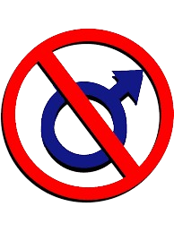
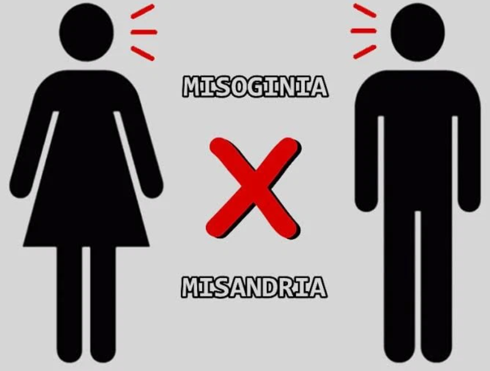
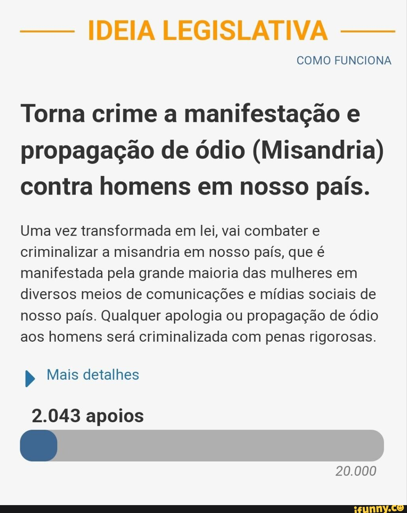

O que é Misandria?
Misandria é a repulsa, desprezo ou ódio contra o sexo masculino. Esta é uma forma de aversão patológica aos homens, enquanto gênero sexual.
Tradução de Misandria
A misandria deriva do grego em que misos é traduzido como “ódio” e andria como homem ou masculino. A misandria pode chegar a ser um discurso de ódio, pelo que se entende a fala e argumentos que busquem a inferiorização de uma classe ou grupo.
♀️ Misoginia X Misandria ♂️
De certa forma Misandria é o oposto da misoginia, apesar de alguns movimentos não entenderem desta forma, como discorreremos adiante.
São opostos?
Existem alguns segmentos da sociedade, porém, que não consideram a misandria como o oposto da misoginia pela sua forma de atuação e pelo impacto político, econômico, social e psicológico de cada um. Enquanto a misoginia está relacionada, atualmente, a diversas situações de violência contra a mulher e é relacionada às situações de depreciação do que é feminino e da pessoa da mulher socialmente. A misandria não afeta os homens enquanto grupo social, apesar de não se poder dizer que não afeta individualmente quem sofre misoginia.
Misandria é crime?
A misandria pode chegar a ser um discurso de ódio, pelo que se entende a fala e argumentos que busquem a inferiorização de uma classe ou grupo. Porém não chega a ter uma Penalização ou Projeto de Lei específico para esse tipo de infração.
